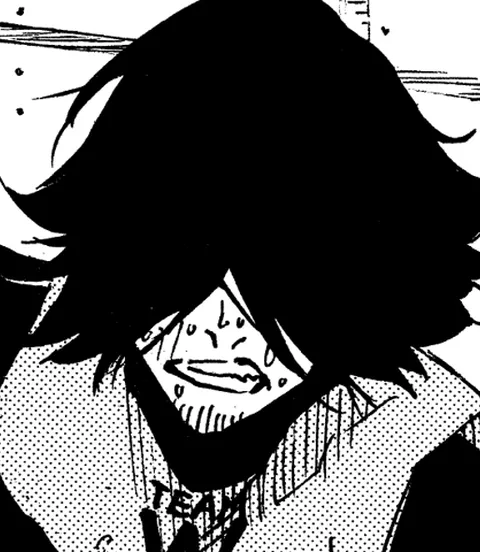

Blue Lock — outros jogadores
Noboru Jigen
Noboru Jigen: jogador do projeto Blue Lock. Estreia no mangá: capítulo 16.
- Posição
- Atacante
- Ranking Blue Lock
- 237º
- Números de camisa
- 7 (1ª Seleção)
- Altura
- 185 cm
- Estreia no mangá
- Capítulo 16
Trajetória no Blue Lock
- 1ª Seleção → Time W → nº 7
Como jogar igual a Noboru
Atacante de área e ruptura: peça a bola no espaço e finalize sem pedir licença.
Fundamentos
- DesmarcaçãoAtaque o espaço no timing do passe.
- Finalização1 ou 2 toques no máximo dentro da área.
- Pressão na zagaNão deixe o zagueiro sair fácil.
Exercícios
- Finalizações de primeira após passe raso (20).
- Finalizações de primeira após passe raso (20).
Mentalidade Se cansou, ainda dá para marcar. Resistência também é Arma.
No videogame
ST / CF Atacante
Atributos-chave: Finalização, Posicionamento, Compostura
Guia prático do fã-site, baseado na posição e nas Armas da ficha · não é material oficial.
⚔ Desafiar para um x1📋 Escalar na Prancheta
Fonte: Blue Lock Wiki – Noboru Jigen (dados do quadro de informações; campos ausentes na wiki foram omitidos)